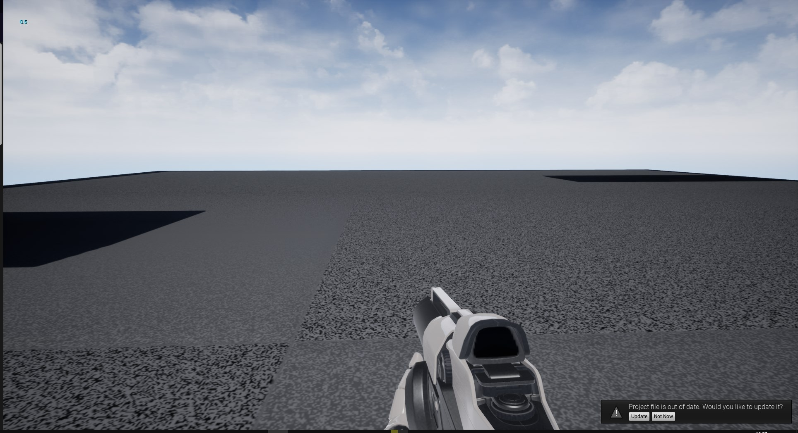
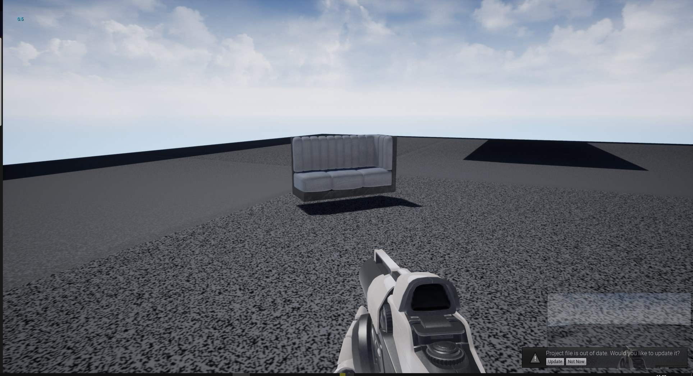
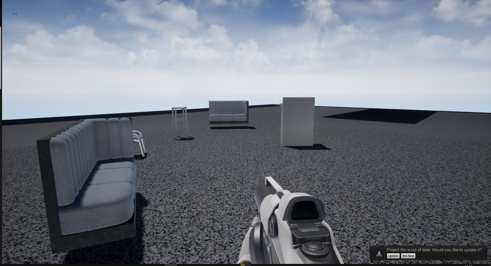

Unfortunately, I do not have access to the final build at present, but I have included some screen shots showing the parts I was responsible for. This included the ability to spawn in objects, change which object is being spawned in, as well as the ability to move around by teleporting in VR. This was a group project where we had to create a VR hospitality environment where users could add, remove and move around objects in order to design a cafe or restaurant layout. The team consisted of 3 artists/modellers, 2 games programming students and 1 computer science student. This was created using UE4 and primarily C++. This Project was set by the hospitality department at derby University asthey wanted a way for students to be able to quickly create a design for a hostpitality enviroment such as a café or restaurant. This Project was not organised well due to not using any management tools such as Trello or the use of source control such as Git this made it much harcet to keep track of what was being done and what was needed to be completed
  For this project I created a tool that allowed users to spawn objects from an array of blueprint actors i did this using StaticLoadObject in onConstruction and setting the class to be selected in the player character.